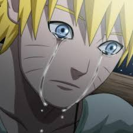

O Naruto pode ser um pouco duro às vezes, talvez você não saiba disso, mas o Naruto também cresceu sem pai. Na verdade ele nunca conheceu nenhum de seus pais, e nunca teve nenhum amigo em nossa aldeia. Mesmo assim eu nunca vi ele chorar, ficar zangado ou se dar por vencido, ele está sempre disposto a melhorar, ele quer ser respeitado, é o sonho dele e o Naruto daria a vida por isso sem hesitar. Meu palpite é que ele se cansou de chorar e decidiu fazer alguma coisa a respeito!

O naruto é solado pelo Goku.
O naruto é solado pelo Saitama.
O naruto é solado pelo Homem Aranha.
O naruto é Bissexual. Ele beijou o Sasuke mas também tem esposa.
Clique para ver o naruto sendo SOLADO!